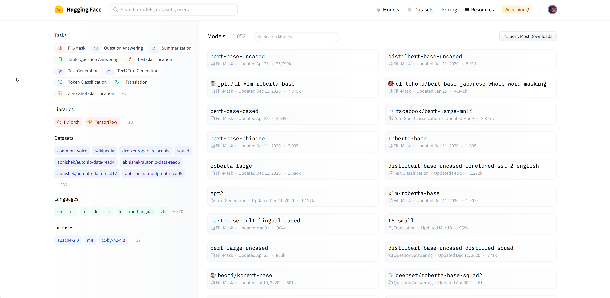
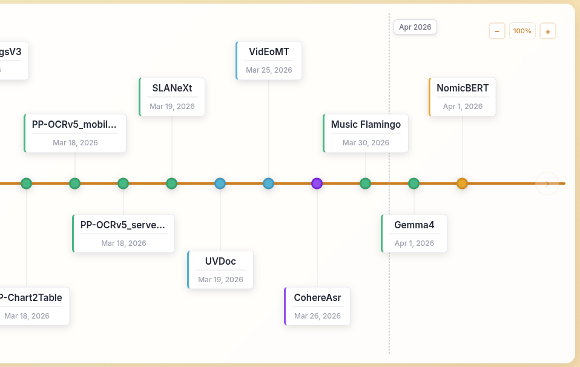
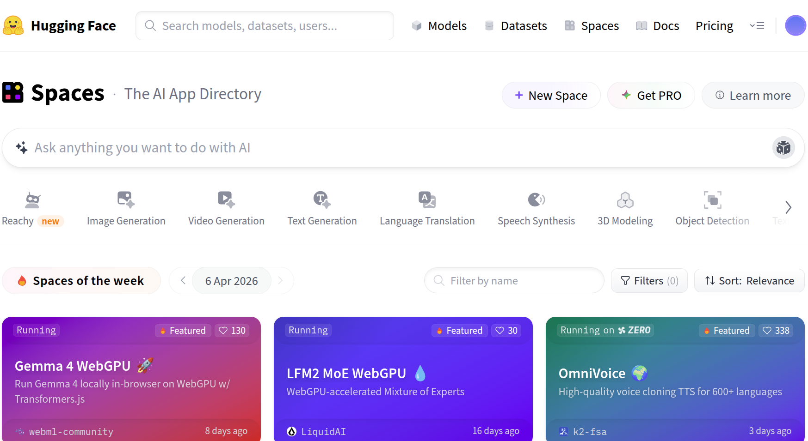

Deep Learning Ecosystem
Model ecosystems matter more than model architectures.
Overview
Rather than starting from low-level framework internals, we will focus on the bigger picture.
- Choose the right model for a task.
- Evaluate it by using it on sample data.
- Fine-tune (if needed) it for a domain-specific task.
- Save and version model artifacts.
- Deploy it for real users or downstream systems.
Open Weights
Open weights: The released weights and biases of a trained neural network.
- These learned parameters determine how the model maps inputs to outputs.
- When shared under an approved license, they let others:
- inspect capabilities
- run inference
- fine-tune for new tasks
- deploy the model in their own systems
See also: Open Weights at opensource.org
Open Weights vs Open Source AI
| Weights and biases |
Released |
Released |
| Training code |
Often not shared |
Fully shared |
| Intermediate checkpoints |
Usually withheld |
Ideally available |
| Training dataset |
Not shared or undisclosed |
Released or documented |
| Data composition |
Partial disclosure |
Full disclosure |
- Key idea: open weights improve reuse; open-source AI aims for much deeper reproducibility and transparency.
What Is Hugging Face?

Hugging Face is a central platform for the modern deep learning ecosystem.
Why Hugging Face Matters
Hugging Face is a central platform for the modern deep learning ecosystem.
- Discover models and datasets.
- Reuse work shared by the community.
- Publish your own checkpoints, demos, and data.
It is especially valuable in an applied course because it turns state-of-the-art research into something accessible for everyone.
Open-weight Models on Hugging Face
- Each model is usually associated with a task or pipeline type.
- The task tells you the expected:
- input shape
- output shape
- related inference parameters
The Models Timeline

Useful bird’s-eye view of the latest models.
Discovering Models Across Time
- The ecosystem changes quickly across text, vision, audio, video, and multimodal systems.
- A timeline view helps you see:
- how architectures evolved
- which model families arrived when
- which became models are more recent
Reading a Model Card
When you open a model page, start with the model card.
- Repository name, such as
openai/whisper-large-v3-turbo
- Download activity and community usage
- Parameter count, precision, and variants
- Description of the intended inputs and outputs
- Usage examples and setup instructions
- Fine-tuning notes, limitations, and references
Model Card: What You Look For
- Task fit: Does the checkpoint solve the problem you actually have?
- Input and output contract:
- speech ⇒ text
- image ⇒ label
- text ⇒ text
- Memory: Can your hardware load it (precision × size)?
- Adaptation: Is there guidance for fine-tuning or domain transfer?
- Deployment: Are there Spaces, examples, or community integrations already built around it?
On many model pages, the right column also points you to Spaces using this model, which is a fast way to inspect real demos.
Spaces: Hosted Inference and Demos
- Spaces are hosted AI demos with Gradio UIs.
- A Space can turn a model into a simple user-facing application, making them useful for:
- rapid prototyping
- portfolio demos
- internal tools
- sharing reproducible examples with others

Spaces let the community package models behind simple interfaces.
Two Common Compute Patterns
- ZeroGPU: shared infrastructure (users pay to use it)
- Dedicated GPU: paid, always-on hardware (developer pays for users to use it)
Explore Community Projects
The Hub is also a map of research groups, startups, and open communities working on specific domains and languages.
Examples relevant to Arabic NLP and regional AI work:
Takeaways
- Deep learning applications often begin with reusing strong existing models.
- Open weights make adaptation and deployment practical even when full training artifacts are unavailable.
- Hugging Face is the main discovery, sharing, and deployment hub for this workflow.
- Model cards, task filters, Colab, and Spaces are core tools for choosing and validating models quickly.